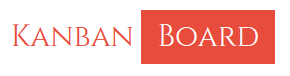

<div [class.theme-alternate]="otherTheme" *ngIf="(isAuthenticated$ | async); else auth">
  <mat-sidenav-container class="sidenav-container">
    <mat-sidenav #drawer class="sidenav" attr.role="navigation" mode="push">
      <mat-toolbar>Menu</mat-toolbar>
      <mat-nav-list>
        <a
          mat-list-item
          routerLink="/board"
          routerLinkActive="active"
          (click)="drawer.close()"
          >Kanban</a
        >
        <!-- <a mat-list-item routerLink="/about" routerLinkActive="active">Link 2</a>
      <a mat-list-item href="#">Link 3</a> -->
      </mat-nav-list>
    </mat-sidenav>
    <mat-sidenav-content>
      <mat-toolbar color="secondry">
        <button
          type="button"
          aria-label="Toggle sidenav"
          mat-icon-button
          (click)="drawer.toggle()"
        >
          <mat-icon aria-label="Side nav toggle icon">menu</mat-icon>
        </button>
        <span class="spacer">
          <!-- KanbanBoard -->
          <button mat-button color="secondry">
            
          </button>
        </span>
        <button type="button" mat-icon-button (click)="otherTheme=!otherTheme">
          <mat-icon>format_color_fill</mat-icon>
        </button>
        <button type="button" mat-icon-button (click)="logout()">
            <mat-icon>exit_to_app</mat-icon>
          </button>
      </mat-toolbar>
      <app-main></app-main>
    </mat-sidenav-content>
  </mat-sidenav-container>
</div>

<ng-template #auth>
  <div class="auth-bg" [class.theme-alternate]="otherTheme">
    <router-outlet></router-outlet>
  </div>
</ng-template>